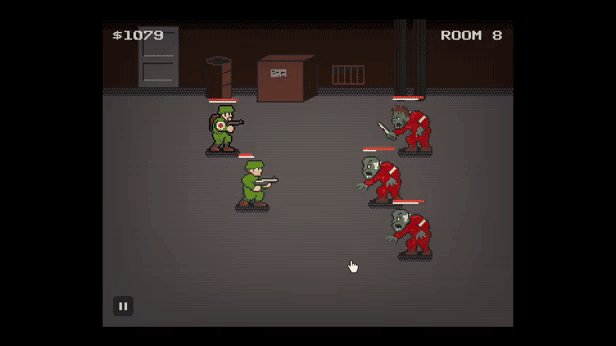
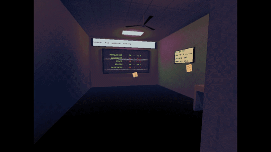
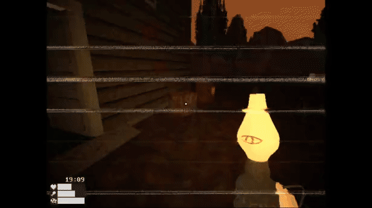
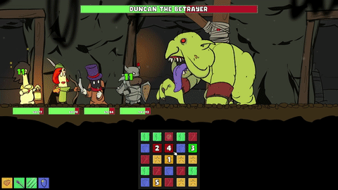

Games
Sea of Sorrow
A short first-person psychological horror game about isolation, memory, and a quiet life at sea.
Spend your days adrift, completing simple tasks such as fishing and keeping your boat afloat, as something beneath the surface slowly begins to unravel.
The game is a small, narrative-focused experience built around atmosphere and environmental storytelling rather than combat or traditional jumpscares.

Miles Deep
A small idler/autobattler about clearing rooms, dying, upgrading, and trying again. Under development, demo on Itch.

Planet Flipper
A short turn-based planet management sim about flipping a world for profit. My first successful battle against scope creep.

Everstill Valley
A slow-burn survival horror game set in a strange forest. Also a valuable lesson in overscoping. I'll finish it eventually. Probably.

Runemancer
Support your teammates by combining runes to unleash powerful abilities in this fast-paced roguelike. My first game, short and to the point. I still love the hand-drawn art.
